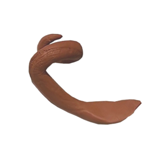
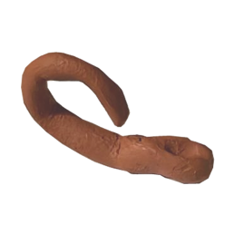
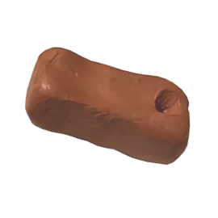
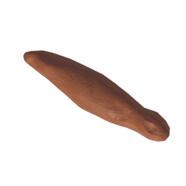
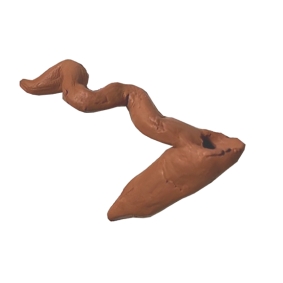
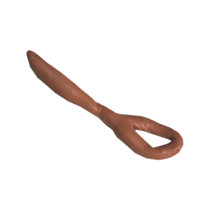

a clay artefact with a curling handle, much like the curled tail of a cartoon pig. The head of this artefact flattens out to a wide edge, sort of like a wooden spatula.

a long red clay artefact with a handle that curls up and over itself, like the tail of a scorpion. Its head is slightly wider, rounded, and mostly carved out.

a red clay artefact that looks like a rectangular block with rounded edges, slightly wider than it is tall. A small hole has been carved out on the longer top surface, centered close to the edge.

a long red clay artefact, widest at its middle, but it has a small widened end, which has a tiny divot (more, perhaps, like a light dent) on its surface. it is rumored to look like a fat blunt, but I personally disagree.

a red clay artefact with a squiggly handle, like a sidewinding snake, and a long hollow head, like a pitcher plant.

a red clay artefact with a long, straight handle. The head of this artefact is like a donut, pinched at one end where it meets the handle.

Magritte's famous painting of a pipe, which is not a pipe! But is it a spoon?